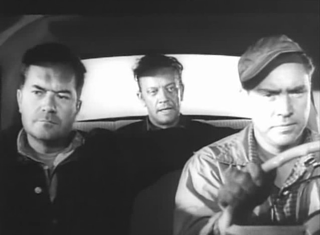

The Hitch-Hiker, frame at 18:35
Ida Lupino · 1953 · Film, black and white (frame)
Free to use
Ida Lupino directed the film and wrote it with her former husband Collier Young, for Filmakers, the company they founded to make low-budget films on social issues. It was the first mainstream American film of its kind directed by a woman. Shooting began on 24 June 1952 and ended in late July, with locations in the Alabama Hills near Lone Pine, California. Daniel Mainwaring, who wrote the original story, went uncredited because he was blacklisted.